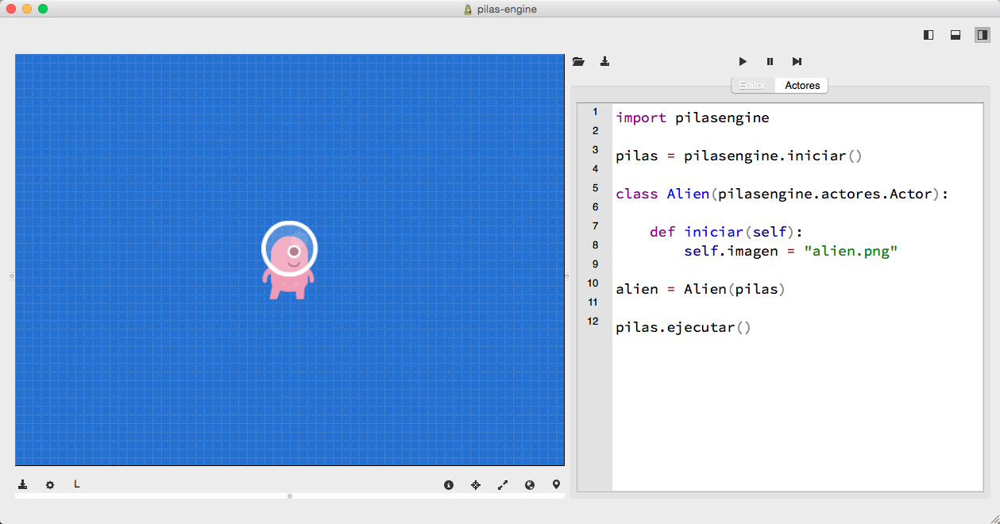
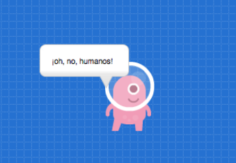
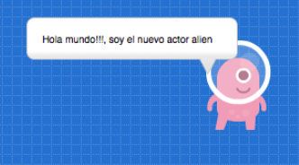
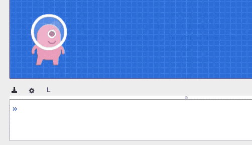
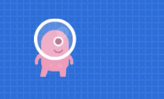
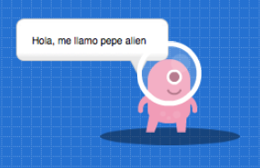

Actores personalizados
Cuando tu juego crece, comienza la necesidad de crear tus propios actores, darles personalidad y lograr funcionalidad personalizada.
Esta página describe como crear tus propios actores usando imágenes y algunos comportamientos propios.
Creando una clase
El primer paso para crear un actor personalizado es construir una clase para agrupar toda la funcionalidad esperada.
Comencemos con una imagen sencilla para el
actor, este archivo se llama alien.png y está
en el directorio de nuestro código:

Luego, es momento de crear el código de la clase para agrupar todo lo relacionado a este nuevo actor. Por ejemplo con un código así:
import pilasengine
class Alien(pilasengine.actores.Actor):
def iniciar(self):
self.imagen = "alien.png"
Mostrando el actor en la pantalla
Meditante la clase solamente hemos creado la "definición" del actor, pero no lo hemos incorporado en el juego aún.
El siguiente paso es incorporarlo al juego usando la sentencia:
alien = Alien(pilas)
Ahora con el código completo, tendrías que ver al personaje en el centro de la pantalla:

Comportamiento heredado
Algo interesante de los nuevos actores es que incorporan
por herencia lo que saben hacer casi todos los actores
de pilas, ya que le hemos indicado que heredará
de clase actor con la linea class Alien(pilasengine.actores.Actor):.
Por ejemplo, podrías escribir algo como:
alien.decir(u"¡oh, no, humanos!")

Creando métodos nuevos
Ten en cuenta que ahora con nuestra nueva clase podemos crear funcionalidad nueva y específica para este actor alien.
Solo tenemos que tener precaución de dirigirnos al
actor como self dentro de los métodos. Por ejemplo,
si quiero crear un método para saludar puedo escribir:
import pilasengine
class Alien(pilasengine.actores.Actor):
def iniciar(self):
self.imagen = "alien.png"
def saludar(self):
self.decir("Hola mundo!!!, soy el nuevo actor alien")
def dar_vuelta(self):
self.rotacion = [360]
Y ahora tenemos dos métodos nuevos para invocar:
alien.saludar()

y otro un poquito mas complejo:
alien.dar_vuelta()

El método especial "actualizar"
Una de las cosas mas importantes de la clase actor
es que incorpora un método especial llamado actualizar. Este método se llamará automáticamente
60 veces por segundo.
Por ejemplo, imagina que buscamos hacer que el actor se mueva para los costados usando las flechas del teclado, podemos usar esté método, simplemente así:
class Alien(pilasengine.actores.Actor):
def iniciar(self):
self.imagen = "alien.png"
def saludar(self):
self.decir("Hola mundo!!!, soy el nuevo actor alien")
def dar_vuelta(self):
self.rotacion = [360]
def actualizar(self):
if pilas.control.izquierda:
self.x -= 5
self.espejado = True
if pilas.control.derecha:
self.x += 5
self.espejado = False
Es decir, como el método actualizar se llama casi todo el tiempo, podemos usarlo para consultar el estado del teclado y hacer algo.
En este caso, si se pulsa hacia la izquierda movemos
el actor un poquito a la izquierda (con self.x -= 5)
y además invertimos el gráfico del actor para que mire a la
izquierda (con self.espejado = True). Y claro, hacemos lo
opuesto para el lado
derecho.
Así se ve mientras voy pulsando las teclas izquierda
y derecha:

Leyendo el código de otros actores
Pilas viene con una función especial llamada
pilas.ver, que te permite ver el código de
cualquier objeto y conocer su funcionamiento.
Esta función es super útil para conocer el código de otras clases actor, e incluso aprender algunas ideas interesantes.
Estos son algunos ejemplos de invocación, cada una de estas sentencias te mostrará el código de la clase completa:
pilas.ver(pilasengine.actores.Mono)
pilas.ver(pilasengine.actores.Aceituna)
pilas.ver(pilasengine.actores.Pacman)
pilas.ver(mono)
Parametros iniciales para los actores
Existen varios casos en donde queremos crear actores pero especificando algunos parametros iniciales, como la posición, energia o cualquier otro valor externo a la clase.
Para estos parámetros podemos crear argumentos personalizados
en la clase nueva, por ejemplo, si quieres crear al actor
Alien (que tomamos de ejemplo aquí) pero quieres especificarle
energia, podrías escribir:
alien = Alien(pilas, energia=100, nombre="pepe alien", con_sombra=True)
Y atender esos argumentos desde el método iniciar:
class Alien(pilasengine.actores.Actor):
def iniciar(self, energia, nombre, con_sombra):
self.imagen = "alien.png"
self.nombre = nombre
self.energia = energia
if con_sombra:
self.sombra = pilas.actores.Sombra()
self.sombra.escala = 0.6
self.sombra.y = -45
else:
self.sombra = None
self.decir("Hola, me llamo " + nombre)
def actualizar(self):
# Si el actor tiene sombra, hacemos que siga al
# actor.
if self.sombra:
self.sombra.x = self.x
self.sombra.y = self.y -45
Y el resultado debería quedarte así:

Detectando errores y problemas al inicializar
Es muy importante que al momento de crear actores a partir de clases especifiques los argumentos a utilizar. Hemos incluído algo de código especial en pilas para detectar errores comunes, como argumentos faltantes o incorrectos.
Pero aún así, ten en cuenta que todo argumento que le envíes
a un actor al crearlo tiene que estar declarado como argumento
en el método iniciar.
Por ejemplo, un mensaje de error habitual que mostrará pilas si olvidamos el nombre de los argumentos podría ser:
× TypeError: No se puede llamar al metodo 'iniciar' de la clase 'Alien'.
× Faltan 3 argumentos: energia, nombre, con_sombra.
× El método 'iniciar' espera estos 3 argumentos: ['energia', 'nombre', 'con_sombra']
Esto significa que hemos querido crear un actor a partir de una clase que espera 3 argumentos, pero solo hemos llamado incorrectamente.
Regresando a nuestro ejemplo anterior, esto produciría un error:
alien = Alien(pilas)
mientras que este otro ejemplo sí funcionará, porque el método
iniciar de la clase Alien espera los argumentos energia, nombre y
con_sombra:
alien = Alien(pilas, energia=100, nombre="pepe alien", con_sombra=True))